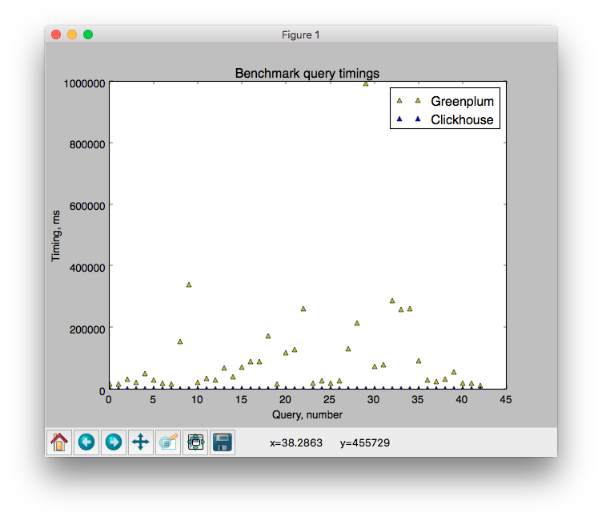
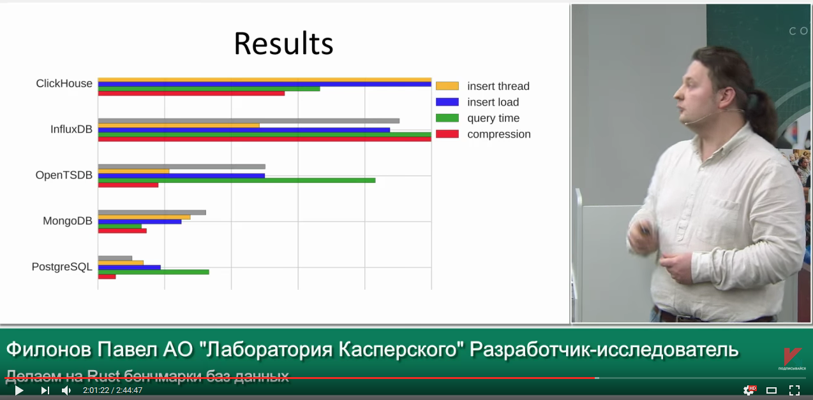

Why column-oriented?
How row-oriented systems work:

ClickHouse - distributed analytical column-oriented DBMS
How row-oriented systems work:
How column-oriented systems work:

Nothing ready-made was suitable.
So we made ClickHouse.
«Evolution of Data Structures in Yandex.Metrica»
* If you want to try ClickHouse, one server is enough.
We managed to make the system relatively user-friendly.
From the very beginning we had detailed documentation.
Within a couple of years, ClickHouse spread to other Yandex departments.
Mail, Market, Direct, Webmaster, AdFox, Infrastructure, Business Analytics...
There are cases when analysts independently installed ClickHouse on virtual machines and successfully used it without any questions.
Then we decided — ClickHouse is too good a system for us to keep it to ourselves.
To make it more fun, we need to get people outside hooked on ClickHouse, let them enjoy it. We decided to go open-source.
Apache 2.0 license — minimum restrictions.
Goal — maximum product distribution.
We want Yandex's product to be used worldwide.
See "Yandex Opens ClickHouse"
Well-structured, cleaned, immutable events.
Click stream. Web analytics. Ad networks. RTB. E-commerce.
Online game analytics. Sensor and monitoring data. Telecom data.
Financial transactions. Stock market analytics.
OLTP
ClickHouse has no UPDATE and full-fledged transactions.
Key-Value
If you need frequent update queries by key, use another solution.
Blob-store, document oriented
ClickHouse is designed for a large number of fine-grained data.
Over-normalized data
Better to make a wide fact table.
— out of desperation.
Yandex.Metrica must work.
Algorithmic optimization.
MergeTree, data locality on disk
— fast range queries.
Example: the uniqCombined function consists of a combination of three different data structures suitable for different cardinality ranges.
Low-level optimization.
Example: vectorized query execution.
Specialization and attention to detail.
Example: we have 17 different GROUP BY algorithms. The best one is chosen for your query.
Now 5 developers.


— HTTP and executable sources;
— merge optimization, vertical merge;
— distributed query tracing;
— clickhouse-local;
— BETWEEN, || operators;
— UUID - text functions;
— KILL QUERY;
— LIMIT BY;
— SELECT INTO OUTFILE;
— «proper» build and packages;
— system.build_options table;
— ability to get progress in HTTP headers;
— ability to skip errors in text formats;
— proper HTTP response codes;
— cached external dictionary performance;
— cached external dictionary instrumentation;
— HTTPS dictionaries;
— information about index memory usage;
— information about uncompressed column sizes;
— metrics for cache RAM consumption;
— metrics about merges;
— DISTINCT optimization;
— gzip performance in HTTP interface;
— mark cache optimization;
— proper comparison logic, least, greatest;
— groupUniqArray for all data types;
— decodeURLComponent;
— protection against accidental DROP TABLE;
— use_client_time_zone; timezone in config;
— fsync_metadata;
— integration with Grafana, Redash, Apache Zeppelin, Superset;
— proper packages for CentOS, RHEL, GosLinux;
— native protocol driver for Go and C++;
— ability to pass X-ClickHouse-* headers;
— benchmarks NYC Taxi, Percona (Spark);
— Greenplum benchmark;
— English Telegram chat;
— meetings and talks (Paris - February, San Francisco - April);
https://www.percona.com/blog/2017/02/13/clickhouse-new-opensource-columnar-database/


— distributed DDL queries;
— configs in ZooKeeper;
— full NULL support;
— ODBC driver functionality on Windows;
— rewrite query analysis: proper JOIN support;
Website: https://clickhouse.com/
Google groups: https://groups.google.com/forum/#!forum/clickhouse
Mailing list: clickhouse-feedback@yandex-team.com
Telegram chat: https://telegram.me/clickhouse_en and https://telegram.me/clickhouse_ru (already 500 participants)
GitHub: https://github.com/ClickHouse/ClickHouse/
+ meetings. Moscow, Saint Petersburg, Novosibirsk... Next: Ekaterinburg, Kiev, Minsk, San Francisco...
HTTP REST
clickhouse-client
JDBC
Python, PHP, Go, Perl, Ruby, Node.JS, R, .NET
Itai Shirav:
«I haven't made a rigorous comparison, but I did convert a time-series table with 9 million rows from Postgres to ClickHouse.
Under ClickHouse queries run about 100 times faster, and the table takes 20 times less disk space. Which is pretty amazing if you ask me».
Bao Dang:
«Obviously, ClickHouse outperformed PostgreSQL at any metric».
Timur Shenkao:
«ClickHouse is extremely fast at simple SELECTs without joins, much faster than Vertica».
Ömer Osman Koçak:
«When we evaluated ClickHouse the results were great compared to Prestodb. Even though the columnar storage optimizations for ORC and Clickhouse is quite similar, Clickhouse uses CPU and Memory resources more efficiently (Presto also uses vectorized execution but cannot take advantage of hardware level optimizations such as SIMD instruction sets because it's written in Java so that's fair) so we also wanted to add support for Clickhouse for our open-source analytics platform Rakam (https://github.com/rakam-io/rakam)»
«I tested Clickhouse, speed is just excellent = much faster than spark on a single machine (I got about 3x, but will compare more). Also compression is better».
«ClickHouse shows comparable speed on such query for 30 days and 8 times faster (!) on such query. We plan to test other queries, but haven't gotten around to it yet.
Query execution speed is stable. In Google BigQuery during peak load periods, for example at 4:00 p.m. PDT or at the beginning of the month, query execution time can noticeably increase».
«This year we deployed a Druid-based build — Imply Analytics Platform, as well as Tranquility, and were ready to launch in production… But after ClickHouse came out, we immediately abandoned Druid, although we spent two months studying and implementing it».
«结论：clickhouse速度更快！»
«In conclusion, ClickHouse is faster!»
http://verynull.com/2016/08/22/infinidb与clickhouse对比/

